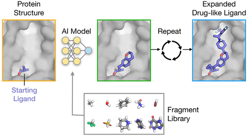

Isomera Studio
A Biotechnology Innovation Studio for Rebuilding America's Capacity to Create, Invent, and Manufacture
Mission
Isomera Studio is a nonprofit biotechnology innovation studio dedicated to rebuilding America's capacity to create, invent, and manufacture.
We believe that America's long-term scientific, economic, and national-security competitiveness depends not only on technological breakthroughs, but on its ability to cultivate future generations of builders, researchers, engineers, entrepreneurs, and creators capable of producing those breakthroughs.
Our mission is therefore twofold: to develop transformative technologies and to develop the people capable of creating them.
We pursue this mission through creative projects that combine scientific research, artificial intelligence, biotechnology, engineering, education, and public engagement.
Origins
The philosophy underlying Isomera Studio emerged from the work of its founder while learning to program at the Stanford AI Lab.
While studying artificial intelligence, she became interested in a simple question: why are artists able to develop such deep intuition about anatomy, biomechanics, structure, and motion simply by learning to draw?
Artists do not merely reproduce images. Through observation and practice, they develop an understanding of how forms occupy space and how structure gives rise to function. Drawing becomes a mechanism for understanding complex systems.
This observation inspired the invention of a molecular generation technology based on the idea that artificial intelligence could learn molecular structures in three dimensions through a process inspired by artistic practice. Rather than treating molecules solely as mathematical objects to be optimized, the system was designed to learn how molecular structures occupy space, interact with one another, and give rise to biological function.
The resulting technology led to a publication at a machine learning conference, an invited presentation at the Dana-Farber Cancer Institute, and a peer-reviewed publication in ACS Central Science that has been viewed more than 21,000 times.

This experience revealed a deeper connection between art, science, and engineering: all three disciplines develop understanding through acts of creation. This realization became the foundation of Isomera Studio.
Biotechnology Innovation Studio
Isomera Studio proposes a model we refer to as the Biotechnology Innovation Studio.
The Innovation Studio integrates four functions that are traditionally separated across different organizations:
- AI-enabled biotechnology research and development
- Startup and venture creation
- Workforce development and technical training
- Public engagement and science communication
Rather than treating these activities as separate efforts, we combine them into a single ecosystem designed to generate both technological innovation and the human capital required to sustain it.
AI-Driven Therapeutic Discovery
One of Isomera Studio's primary research programs focuses on artificial intelligence for molecular generation and therapeutic discovery.
A key example is our collaboration with Chromologic. Together, we are combining Isomera Studio's molecular generation platform with Chromologic's expertise in drug delivery and translational biotechnology.
The collaboration focuses on identifying compounds capable of protecting the brain from traumatic injury before irreversible damage occurs. Current interventions for traumatic brain injury largely address damage after injury has already taken place. Our objective is to identify compounds capable of intervening earlier in the injury cascade, reducing or preventing the cellular and molecular damage that leads to long-term neurological impairment.
This effort has particular relevance for military personnel, veterans, and others at elevated risk of traumatic brain injury.
To support this work, we have established a mouse model of concussive traumatic brain injury that provides a platform for evaluating candidate compounds in vivo. This capability allows us to move beyond computational discovery and assess whether newly identified molecules can reduce neurological damage and improve outcomes following injury.
We are also exploring applications in neuropsychiatric disorders, molecular glue discovery, and other areas where advances in artificial intelligence may significantly accelerate therapeutic development.
Ragnarök: Severance of the Body from the Mind
A second expression of Isomera Studio's mission is Ragnarök: Severance of the Body from the Mind, an ongoing large-scale public artwork exploring mental illness, traumatic brain injury, consciousness, and healing.
Currently under construction, the installation is built from reclaimed windows and doors transformed into fractal Sierpiński-triangle structures. Within each window pane is a hand-drawn image of a psychedelic compound. Each pane will ultimately be transformed into an infinity mirror, creating a visual metaphor for consciousness and the hidden dimensions of the human mind.
The installation explores mental illness as a separation of the mind from the body and from the world around it. The molecular imagery serves as a metaphor for emerging therapeutic approaches that may help restore these connections, portraying these compounds as opening windows into consciousness.
Equally important is the process through which the installation is built. Ragnarök brings together tradespeople, fabricators, carpenters, welders, engineers, scientists, artists, project managers, and community members to work toward a common goal. In doing so, it functions as a workforce-development platform that teaches technical skills, collaboration, leadership, and creative problem solving.
Long-Term Vision
Isomera Studio seeks to establish a new kind of institution: part accelerator, part research laboratory, part design studio, part workshop, and part educational organization.
Our objective is not only to accelerate biotechnology innovation but to rebuild the broader culture of invention that makes innovation possible. By combining scientific discovery, entrepreneurship, workforce development, and public engagement into a single ecosystem, we aim to create both technological breakthroughs and the people needed to create them.
We believe America's future competitiveness will depend not only on what technologies it invents, but on how effectively it develops the next generation of builders capable of inventing them.
Our goal is not simply to invent new technologies, but to help create a society capable of continually inventing its future.